多项用户目标
多项用户目标之间可能包含不同的协作关系。设计中需要关注用户为什么有必要在任务间切换或配合，并根据任务关系组织页面。
iPhone Duo 上的微信
多任务体验设计
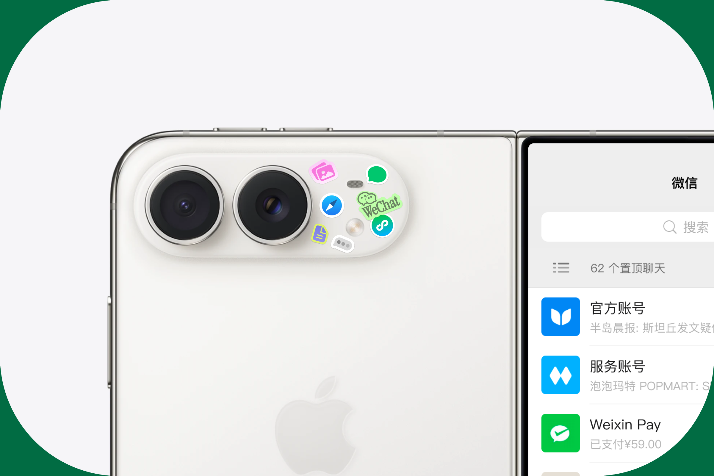
多任务是用户目标之间的关系。指用户在一条连续的使用过程中，需要处理两项或多项目标，并且希望在切换、并行或中断后，能够保留必要的上下文。
多项用户目标之间可能包含不同的协作关系。设计中需要关注用户为什么有必要在任务间切换或配合，并根据任务关系组织页面。
上下文是用户在切换任务、收起浮窗或开合设备后理解自己当前操作状态的必要内容。设计中需要关注任务在浮窗、内屏、外屏之间的接力方式，并依据任务上下文特征权衡信息保留。
角色不是由任务内容类型决定的，同一项任务的角色会随时变化。
微信在直板iPhone上的浮层功能已经具备了多任务核心基础场景 (中断/恢复) 的用户体验链路，并通过小窗的形式提供了支撑能力 (任务管理) ，满足用户的多任务需求。
在iPhone Duo上使用微信多任务功能，“折叠屏”属性带来的新体验问题是：如何帮助用户理解什么时候值得主动展开屏幕？如何以更符合直觉的方式向用户传达任务分屏规则？如何处理更高可用空间带来的更多信息层级？
本题的目标是针对多任务体验链路中的P0级任务关系情景进行折叠屏体验优化，实现：
通过基础适配设计提升核心基础场景和支撑能力的体验；
通过优化分屏设计围绕机会场景拓展内屏功能；
通过视图层级设计实现内外屏切换的无缝衔接体验。
iPhone Duo 展开后，微信可以利用更大的内屏，将原本需要逐层进入、返回或通过浮窗切换的内容，同时组织在相邻的两个面板中。这也带来了本次设计的最大机会点。参考 Apple 对分栏布局和信息层级的指导，本方案将会话相关内容保留在左侧作为持续上下文，在右侧提供打开与之相关的图片、文件、小程序、媒体或网页的能力。
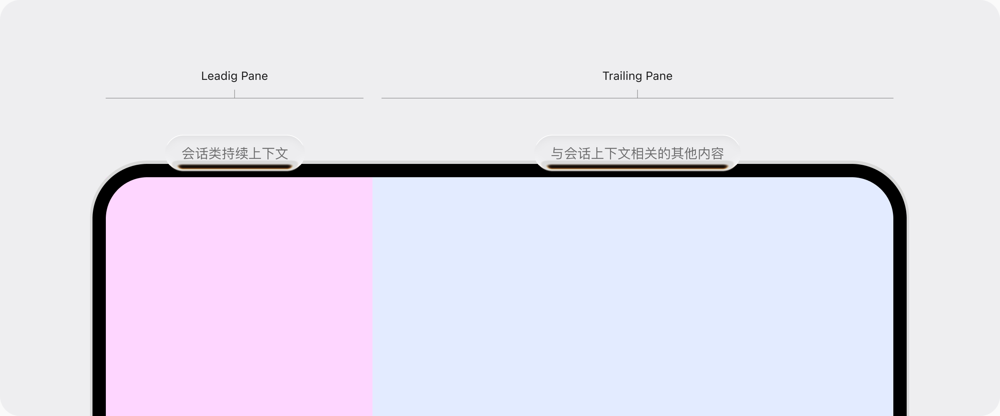
内屏为微信提供了同时展示两个页面的空间。用户既可能沿着原有路径逐层进入会话和内容，也可能希望保留一项内容，在查看内容与处理聊天之间交替操作。基于这两种不同的任务关系，方案将内屏体验归纳为「分屏递进」与「分屏交替并行」，并进一步结合微信内容类型，判断组合场景。
* 分屏递进本身不一定是多任务，但它是与多任务体验相干涉的结构基础，需要与多任务场景同步优化。
用户意图：浏览、找到并查看具体内容。
用户沿着同一条任务路径逐层深入。通常情况下，内屏需保留聊天列表，并展示当前会话或进一步打开的最高层级的内容，并保留逐层返回关系。
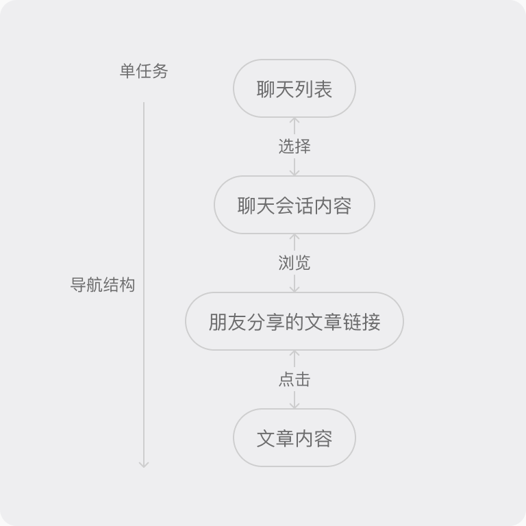
用户意图：围绕同一目标，在任务间反复参考或操作。
用户需要持续关注聊天和关联内容，在两者之间反复查看、确认或操作。重点是需要减少寻找和往返的负担，同时保留双方的任务进度。
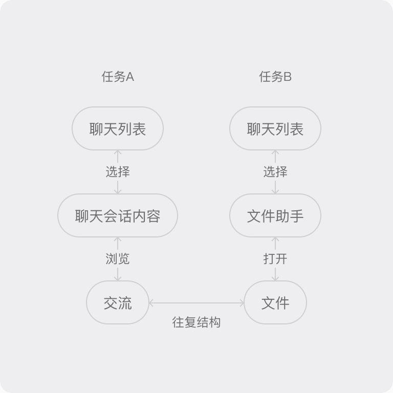
同一次使用场景中的路径可发生转变
用户的路径会随任务目标变化：有时只需逐层查看并返回，有时则需要让聊天与内容持续配合。不同内容的操作方式和状态层级会影响任务间配合的体验。
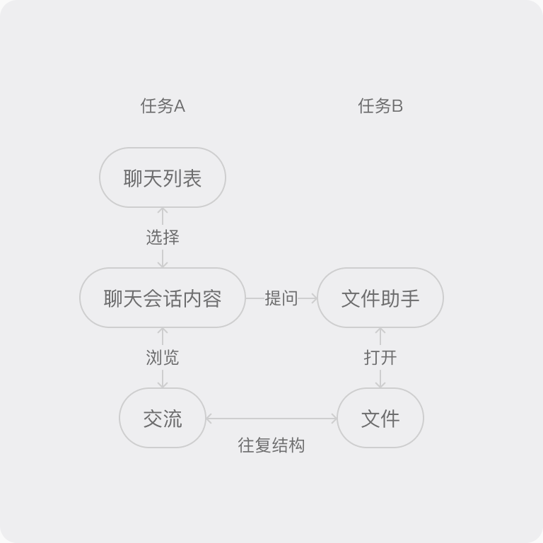
面对不同的内容类型，用户对其并行使用的期待可能有所不同。梳理了微信中常见的内容类型，并对其可能携带的典型上下文情景进行梳理。
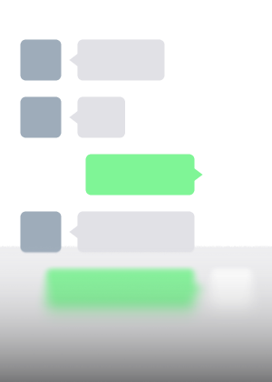
用户围绕内容与他人交流、确认或反馈，需要在查看信息后继续回复。聊天会话
用户查看对方发送的材料，并结合细节提出问题、解释或反馈。图片/文件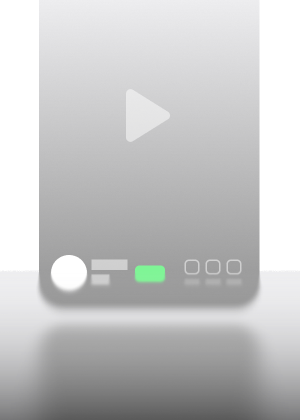
用户观看或收听内容，同时处理消息，或与他人讨论内容。视频号等媒体内容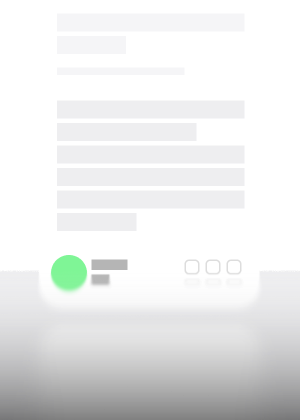
用户通过链接或推送进入文章，阅读后返回，或参考文章内容进行讨论。公众号/服务号内容直板机中，浮窗的入口设计为不干扰界面的竖条，用户可自定义浮窗入口和展开位置。我认为这是由于在直板机的比例限制下（屏幕水平方空间为紧凑布局，纵向为无限延伸的信息内容）而做出的平衡取舍。在iPhone Duo中，水平空间增大，右侧先天让出了控制区，因此浮窗不必挤占内容的横向空间。这也降低了右侧控制栏与内容之间的“界限”要求。
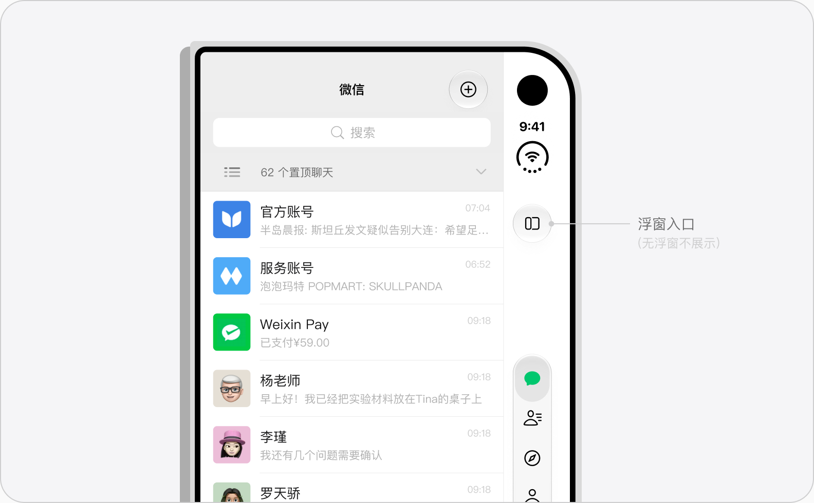
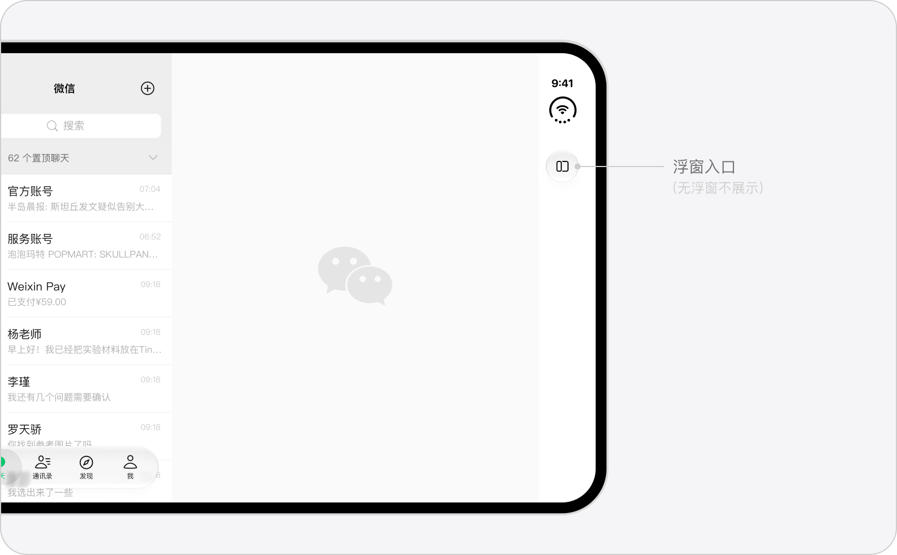
原浮窗入口的位置是自由的，这样可以为用户提供更多自定义场景，方便浮窗展开后与底层界面内容之间的位置关系协调无遮挡。虽然浮窗入口是相对固定的，但展开后的浮窗面板仍旧可以保留这一自由度，记忆上一次浮窗面板的展开位置 (纵向位置)。
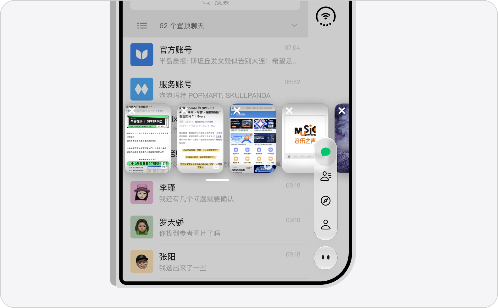
在中断与恢复场景中，打断用户的信息通常只需被处理一次，该信息通常与用户当前正在浏览的内容没有关联。这种情况下，常规的浮窗或消息浮层逻辑已经足够，用户可能无需展开屏幕即可完成需求的处理。但当用户需要反复查看或持续操作多项任务时，内屏应当及时发挥其可用空间优势，通过同时展示多条任务线的内容缩短用户路径。
双面板默认保持递进关系：用户在左侧选择内容，右侧展示对应页面。当用户希望保留正在查看的内容，同时处理其他会话时，点击交界处可将右侧内容保留；此后左侧继续导航，右侧保持不变。当新内容需要占用已固定的右侧，用户可先临时查看，或主动将原内容暂存后替换。这样，用户无需预先判断面板之间的复杂状态，也能明确控制当前任务是否被保留。
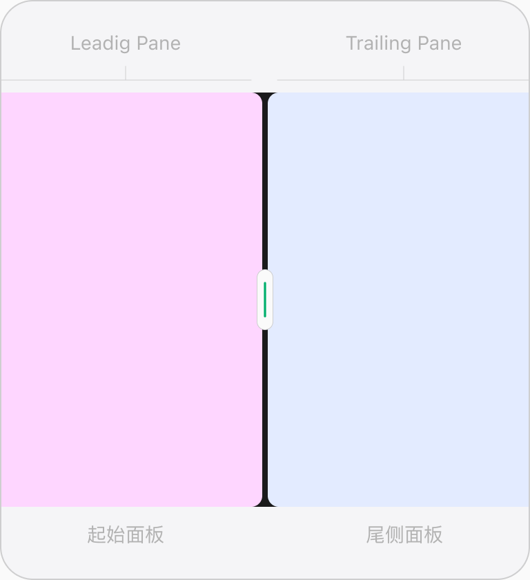
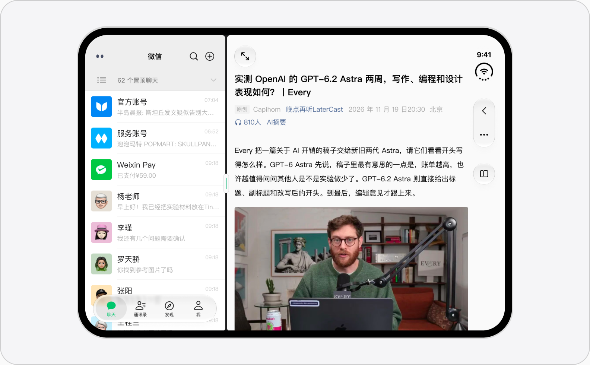
本方案最早期的核心思路是用分隔器控制两个面板处于导航关联或是各自独立任务。为覆盖所有场景，分隔器被定义了“可选与否”+“递进/分离”的2*2共计4种情况，对左右的不同组合做出了规定。但由于存在左右内容匹配的限制，这种方案让规则十分复杂，用户很难快速学习。
在上述问题的基础上，方案进行了一定优化，不再让分隔器负责管理递进/分离的四种状态，而是保留默认的递进导航，聚焦对右侧任务的“保留”动作，用户只需要判断右侧内容是否需要保留。当新内容需要占用右侧时，再由用户决定如何处理。
这种“保护了右侧内容”的心智削减了学习难度，它会在保留时切断上下文，使其独立。但却仍然会让左侧的新内容无处依附。例如，左侧面板为聊天会话，右侧面板为固定的公众号文章，此时用户若要打开会话中的图片或朋友分享的内容链接，就会与右侧固定的内容产生冲突。在浮窗数量限制为5个的情况下，无法借用浮窗来临时承载被替代的固定内容。对此，可能需要新定义一种临时预览的层级，例如SwiftUI中的Overlay arrangement，借用Sheet来预览内容，但都会显著增加交互层级的复杂度。
为此制作了方案2.2，直接依赖浮窗能力来闭环多任务功能。
默认状态下，左侧展示聊天列表，右侧按微信原有层级逐步打开会话、文章或其他内容。当用户需要同时处理两项任务时，可将内容加入浮窗并在右侧展开；此时左侧允许进入聊天内容页，两侧暂时独立。当用户从左侧打开新的内容时，右侧浮窗自动回收，界面回到默认结构，用户仍可通过浮窗恢复原任务。该方案平衡了微信已有的浮窗心智，建立单任务浏览与双任务并行之间的转换，通过浮窗中转消解了上一方案带来的固定态复杂性问题。
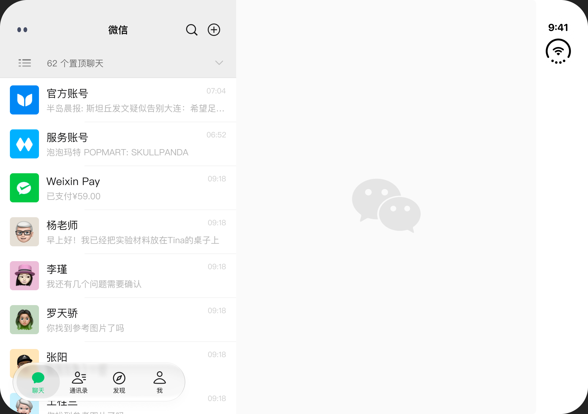


本方案优先支持相对独立的任务并行。借助微信已有的浮窗心智，用户可以建立单任务浏览与双任务并行之间的转换，同时保持多任务逻辑清晰，可随时在多任务并行-单任务递进的模式下转化。
默认状态下，左侧固定展示聊天列表，右侧展示用户选中的会话，并承载从会话或公众号 / 服务号消息聚合页中继续打开的内容。用户可通过右侧返回操作回到上一页面，保持原有的逐层浏览路径。
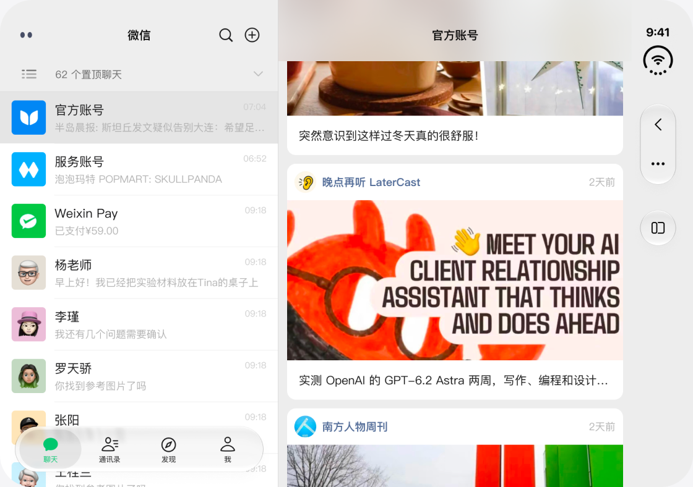
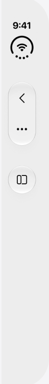
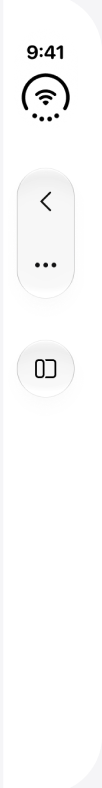
当用户需要一边聊天、一边查看或操作另一项内容时，可将内容加入浮窗并在右侧展开。此时左侧允许进入具体聊天会话，形成「左侧聊天 + 右侧浮窗内容」的并行布局。两侧暂时独立：左侧切换会话时，右侧浮窗内容保持不变；若用户从左侧聊天打开新内容，原浮窗收回，界面恢复默认递进结构。
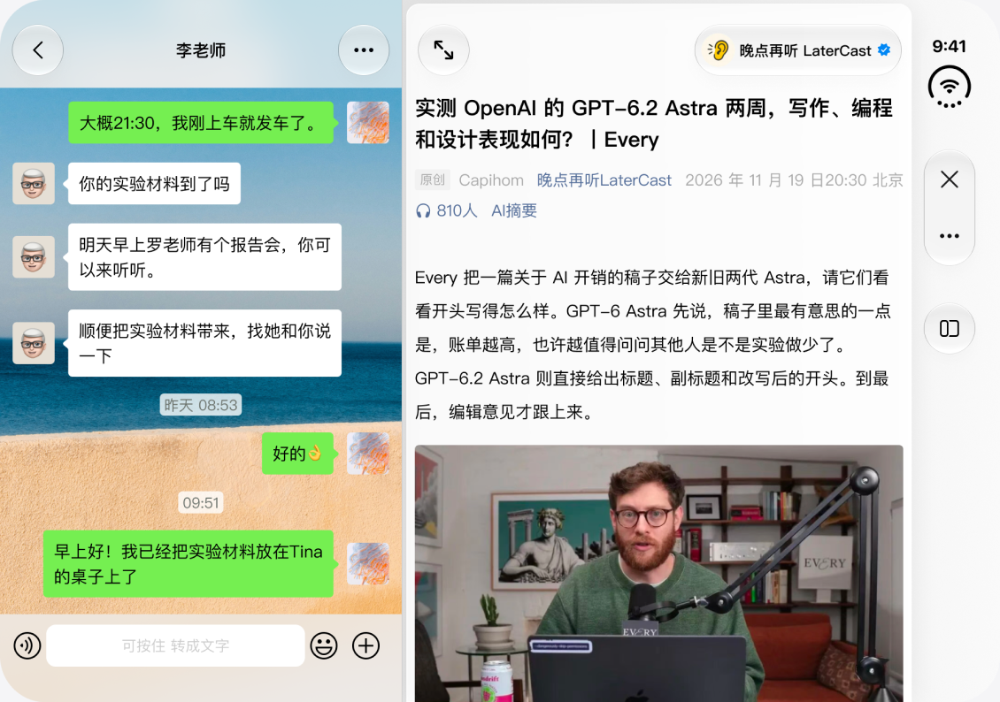
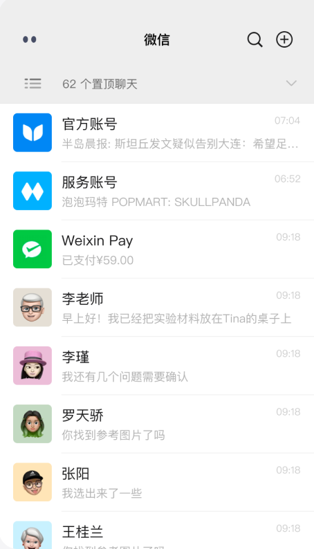
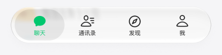
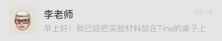
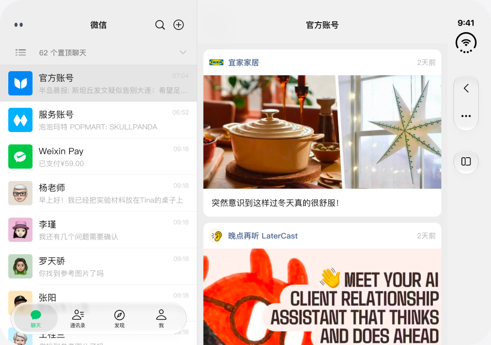
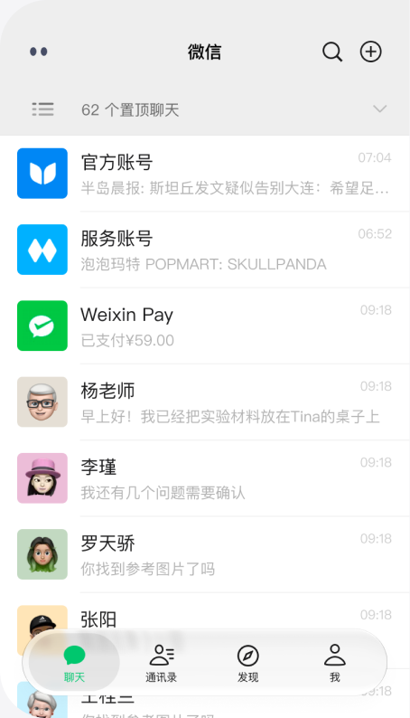
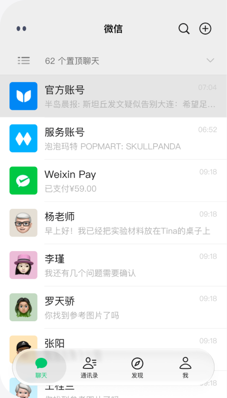
两侧不同时展示同类内容，例如不同时展示两个具体聊天会话。该规则用于保持面板分工清楚，减少用户对当前操作对象的混淆。全部规则匹配情况见下表。
多任务目标下，用户可通过浮窗打开一些本不属于当前任务流程的内容。因此，左右面板的内容之间不一定存在连续性。例如，对于右侧为“公众号文章”的情景，文章可以由用户从公众号中打开 (递进)，可以是来自好友聊天中的分享 (递进)，也可以由用户从浮窗独立打开。由于浮窗不携带上下文 (内容来源)，有必要做出一定视觉元素的区隔，使用户得以获悉当前的左右内容是否上下文连续。
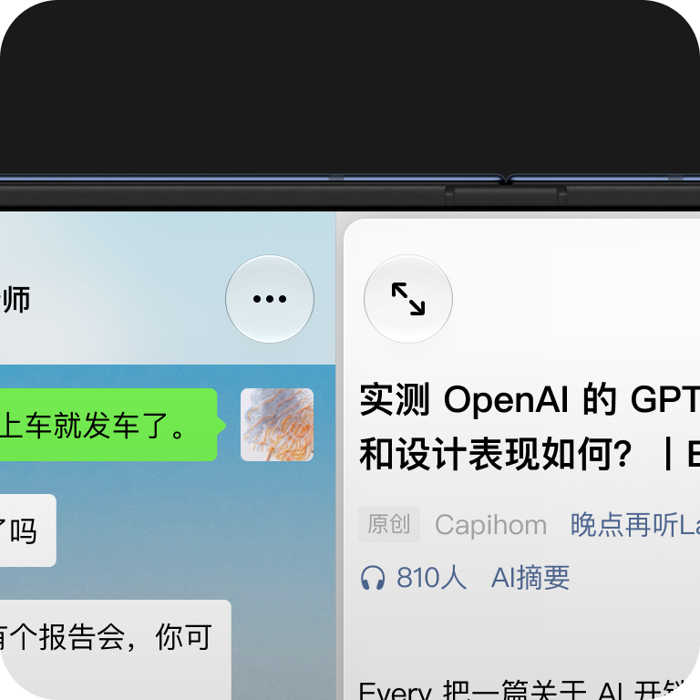
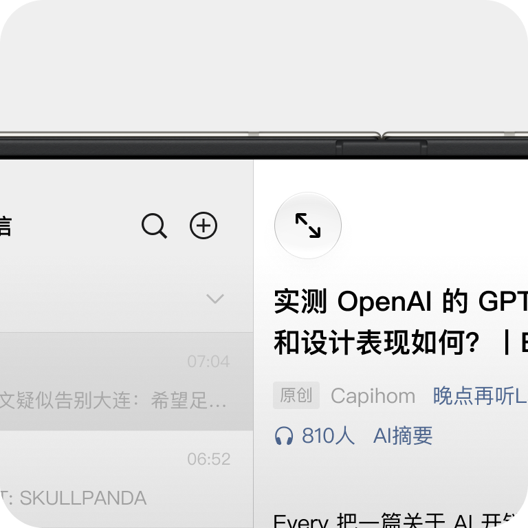
微信中的多任务往往不会随着设备开合而结束。当用户在内屏中同时处理聊天与内容，或沿着消息路径逐层浏览时，合屏会改变可用空间，也会改变当前可见的页面。为此，方案通过明确多任务场景下的视图层级与状态转换规则，决定空间变化时的页面层级展示逻辑。
* 由于本题聚焦多任务场景，且内外屏切换的体验在分屏递进与分屏交替并行之间并无显著可预见的冲突，因此下述内容只包含分屏交替并行场景。
正在载入 3D 样机…